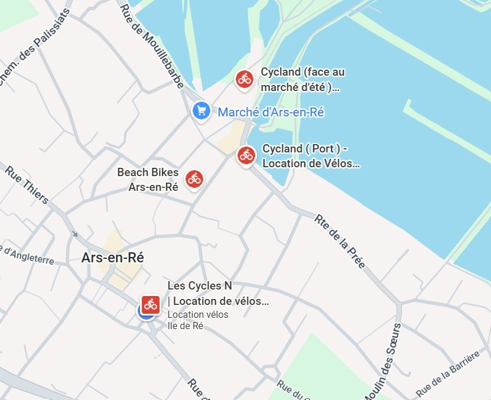
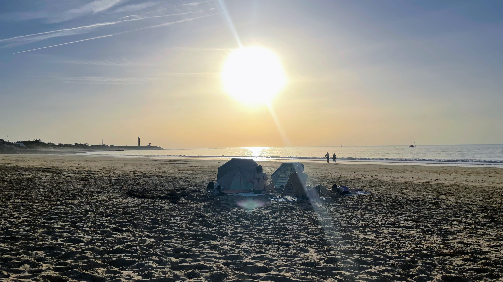

Location de vélos
Au plus simple, vous aurez remarqué le loueur de la place, à 20 mètres de la maison :
D’autres loueurs sont disponibles à Ars-en-Ré :
- Beach Bikes, entre la place de l’église et le port.
- Cycland, sur le port à droite en venant de la place.

Faire les courses
Un marché est ouvert toute l’année à Ars-en-Ré.
Marché d’Ars-en-Ré
De début avril à fin septembre, il est ouvert tous les jours à la halle et en extérieur, près du port.
Le reste de l’année, il se tient sur la place Carnot, devant l’église, le mardi, vendredi et samedi.
Saint-Clément-des-Baleines
Un marché est également ouvert le mardi, jeudi et samedi en basse saison à Saint-Clément-des-Baleines, devant l’église.
Comptez environ 15 minutes en vélo.
U Express et Biocoop
À Ars-en-Ré, vous trouverez également un U Express et un Biocoop sur la route de Saint-Clément.
Vous y accéderez par l’intérieur du village par la rue d’Angleterre et la rue de la Diète — ça ne s’invente pas — en 10 minutes à pied et 2 minutes en vélo.
Grandes surfaces
Un centre Leclerc et un Intermarché se trouvent à côté de Saint-Martin, à 20 minutes de voiture.
Boulangerie
Le Fournil d'Ars-en-Ré est ouvert tous les jours sur la place de l'église
Horaires
Vérifiez les horaires d’ouverture qui varient selon la saison, notamment le dimanche.
Se restaurer et boire un verre
En saison estivale, de nombreux restaurants sont ouverts à Ars-en-Ré. Ils ne le sont pas tous hors saison.
Pour prendre un café ou un petit déjeuner
- L’Octopus, sur la place de l’église.
- La Tour du Sénéchal, sur la place de l’église.
- Les cafés/restaurants du port
- Les Frères de la Côte, après avoir piqué une tête dans la mer de la jetée.
Pour déjeuner ou dîner
- La Bouche Rit, le plus proche de la maison.
- La Cantine du Quai.
- Le Café du Commerce.
- Ristorante Enoteca Italiana.
- Huître DoRê, un bar à huître dans les marais en direction de la base nautique.
Pour boire un verre
- Les Frères de la Côte, en début de soirée face à la mer et au soleil couchant.
- L’Arrondi, sur le port, qui profite des derniers rayons du soleil avec une vue lointaine sur le phare des Baleines.
Pour prendre une glace
- Sur le port, vous trouverez Les Givrés ou La Bonbonnière.
- Lors d’une virée au phare des Baleines, vous vous arrêterez à La Martinière, véritable institution de l’île, présente également à Saint-Martin ou à La Flotte notamment. Si vous n’aimez pas les glaces, jetez-vous sur une gaufre !
Les plages

Les sites de baignade les plus accessibles sont sur la côte atlantique :
La jetée
Au bout de la Route de la Grange, vous trouverez une jetée et un bout de plage. Bien pour se rafraîchir rapidement.
Plage Campiotel
La plage Campiotel est à 12 minutes en vélo. Plus sympa à marée haute car quelques cailloux. Parfaite pour un pique-nique face au soleil couchant.
Plage du Martray
La plage du Martray est à 15 minutes en vélo. À marée haute également.
La Conche des Baleines
Au nord de l’île, vous trouverez les plages les plus belles.
La Conche des Baleines est une grande plage qui s’étend à l’est du phare des Baleines, à 20 minutes en vélo.
Trousse Chemise
La plage de Trousse Chemise, à l’est des Portes, est protégée du vent et assez propice aux pique-niques du déjeuner.
Comptez 30 minutes à vélo.
Anse du Fourneau
L’Anse du Fourneau, à l’est des Portes, est également protégée du vent et assez propice aux pique-niques du déjeuner.
Comptez 30 minutes à vélo.